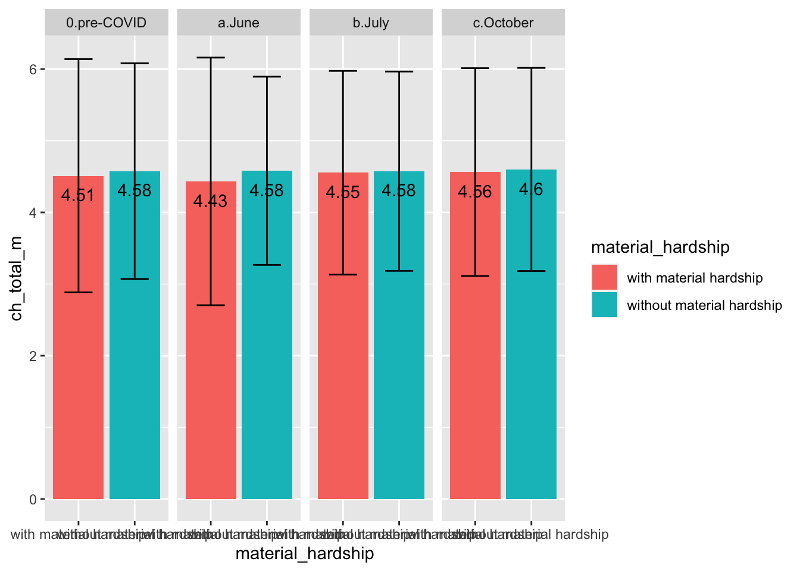

Note: Becasue data of weeks 9 & 11 were collected during June and had no significant differences, analyses below combined family conflict data of both weeks.
Comparisons Using Percentage of Caregivers Who Reported Increased Family Conflict Levels Compared to Pre-COVID
Total Family Conflict Increased Percentage
Overall
- Results indicate that 59.32% of caregivers during June, 61.55% of caregivers during July, and 56.99% caregivers during Octorber reported increased family conflict levels, compared to pre-COVID.
- The percentage of caregivers who reported increased family conflict compared to pre-COVID remained stable at all three time-points.
Income Level
- At all three time-points, the percentage of increased family conflict did not significantly differ between low- and high-income families
- For both low- and high-income families, the percentage of increased family conflict did not change significantly over time.
Material Hardship Level
- During June and July, the percentage of increased family conflict did not significantly differ between low- and high-income families. However, at the most recent time-point (October), families with material hardship reported significantly more increases in family conflict (60.48%) compared to families without material hardship (53.54%)
- For families with material hardship, the percentage of increased family conflict did not change significantly over time. However, for families without material hardship, the percentage of increased family conflict remained stable at June and July, and then marginally significantly decreased at October.
Race/Ethnicity
- During June and July, the percentage of increased family conflict did not significantly differ by race/ethnicity. However, at the most recent time-point (October), significantly fewer Black families reported increases in family conflict (40.37%) compared to White (59.52%) and Latinx (56.49%) families
- For White and Latinx, the percentage of increased family conflict did not change significantly over time; For Black families, the percentage of increased family conflict remained stable at June and July, and then marginally significantly decreased at October.
Spousal Conflict Increased Percentage
Overall
- Results indicate that 29.85% of caregivers during June, 31.77% of caregivers during July, and 26.74% caregivers during Octorber reported increased spousal conflict levels, compared to pre-COVID.
- The percentage of caregivers who reported increased family conflict compared to pre-COVID remained stable at June and July, and decreased in October (marginally significant).
Income Level
- At all three time-points, the percentage of increased spousal conflict did not significantly differ between low- and high-income families
- For both low- and high-income families, the percentage of increased spousal conflict did not change significantly over time.
Material Hardship Level
- At all three months, tfamilies with material hardship reported significantly more increases in spousal conflict compared to families without material hardship
- For both groups, the percentage of increased spousal conflict did not change significantly over time. .
Race/Ethnicity
- At all three months, the percentage of increased family conflict did not significantly differ by race/ethnicity.
- For all race/ethnicity groups, the percentage of increased family conflict did not change significantly over time.
Parent-Child Conflict Increased Percentage
Overall
- Results indicate that 56.46% of caregivers during June, 59.11% of caregivers during July, and 53.82% caregivers during Octorber reported increased parent-child conflict levels, compared to pre-COVID.
- The percentage of caregivers who reported increased parent-child conflict compared to pre-COVID remained stable at June and July, and decreased in October (marginally significant).
Income Level
- At all three time-points, the percentage of increased parent-child conflict did not significantly differ between low- and high-income families
- For both low- and high-income families, the percentage of increased parent-child conflict did not change significantly over time.
Material Hardship Level
- During June and July, the percentage of reported increased parent-child conflict levels did not change significantly by families’ material hardship status; However, families with material hardship reported significantly more increases in parent-child conflict than pre-COVID compared to families without material hardship
- For families with material hardship, the percentage of increased parent-child conflict did not change significantly over time; For families without material hardship, the percentage of increased parent-child conflict remained stable during June and July, and then decreased in October (marginally significant)
Race/Ethnicity
- During June, Black families reported significantly lower percentage of increased parent-child conflict compared to Latinx and White families; During July, the percentage of increased parent-child conflict did not change significantly by race/ethnicity groups; During October, Black families reported significantly lower percentage of increased parent-child conflict compared to White families.
- For Latinx and White families, the percentage of increased parent-child conflict did not change significantly over time; For Black families, the percentage of increased parent-child conflict did not change significantly in June and July, and then decreased significantly in October.
Sources for Conflicts
Detailed Categories
- At all three timepoints, majority caregivers reported that sources that can help them decrease family conflict the most were emotional measures, followed by financial measures. Only small amount of caregivers that childcare support could help decrese family conflict.
1 - Being confident that my family has health insurance
2 - Not being so socially isolated
3 - Having lower levels of worry and stress
4 - Knowing we can pay for food
5 - Knowing we can pay my rent/mortgage/housing expenses
6 - Knowing we can pay my rent/mortgage/housing expenses
7 - Being able to meet my child’s social and emotional needs
8 - Knowing we have access to childcare
Aggregated to Financial & Emotional
Overall
- At all three timepoints, majority caregivers reported that sources that can help them decrease family conflict the most were emotional measures, followed by financial measures. Only small amount of caregivers that childcare support could help decrese family conflict. There were no statistically significant differences across different timepoints.
- Note. For below sub-group analyses, the source of childcare was removed due to small percentage. Thus, the analsyes focused on emotional and financial conflict sources.
Income Level
- At all time-points, low-income families reported significantly more financial conflict sources and fewer emotional sources compared to high-income families;
- For high-income families, the sources of conflict remained stable over the thee time-points. For low-income families, the sources of conflict remained stable at June and July; then in October, emotional conflict sources percentage decreased while financial conflict sources increased (marginally significant) .
Material Hardship
- For families with material hardship, the sources for conflicts remained stable at June and July; then in October, emotional conflict sources decreased and financial conflict sources increased (marginally significant). For families without material hardship, the conflict source percentages remained stable over time
- All all time-points, families with material hardship reported significantly higher levels of financial conflict and lower levels of emotional conflict compared to families without material conflict.
Race/Ethnicity
- For families of all three race/ethnicity groups, conflict sources did not significantly change over timed
- In June and October, White families reported significantly higher levels of emotional conflict and lower levels of financial conflict compared to Black and Latinx families.
- In July, White families reported marginally significant higher levels of emotional conflict compared to Black families; White families also reported significantly lower levels of financial conflict compared to Latinx and Black families.
Family Cohesion
Overall
- Families remained very high levels of cohesion throughout the pandemic
- No statistically significant change in family cohesion levels from pre-COVID to June
- Family cohesion levels increased slightly and marginally significantly from June to July; the increases from June to October were small in magnitude but statistically significant.
Income Levels
- No significant differences in family cohesion levels between low- and high-income families
Material Hardship
- During pre-COVID and June, families with material hardship reported significantly lower levels of family cohesion compared to families without material hardship
- In July and October, family cohesion levels did not change significantly by their material hardship status

Race/Ethnicity
- Pre-COVID, White families reported significant higher levels of family cohesion compared to Black and Latinx families
- During June, White families reported marginally significant higher levels of family cohesion compared to Black families, and significant higher levels of family cohesion than Latinx families
- During July, White families reported significant higher levels of family cohesion compared to Black and Latinx families; Latinx families also reported significant higher levels of family cohesion than Black families
- During October, White and Latinx families reproted significant higher levels of family cohesion than Black families.